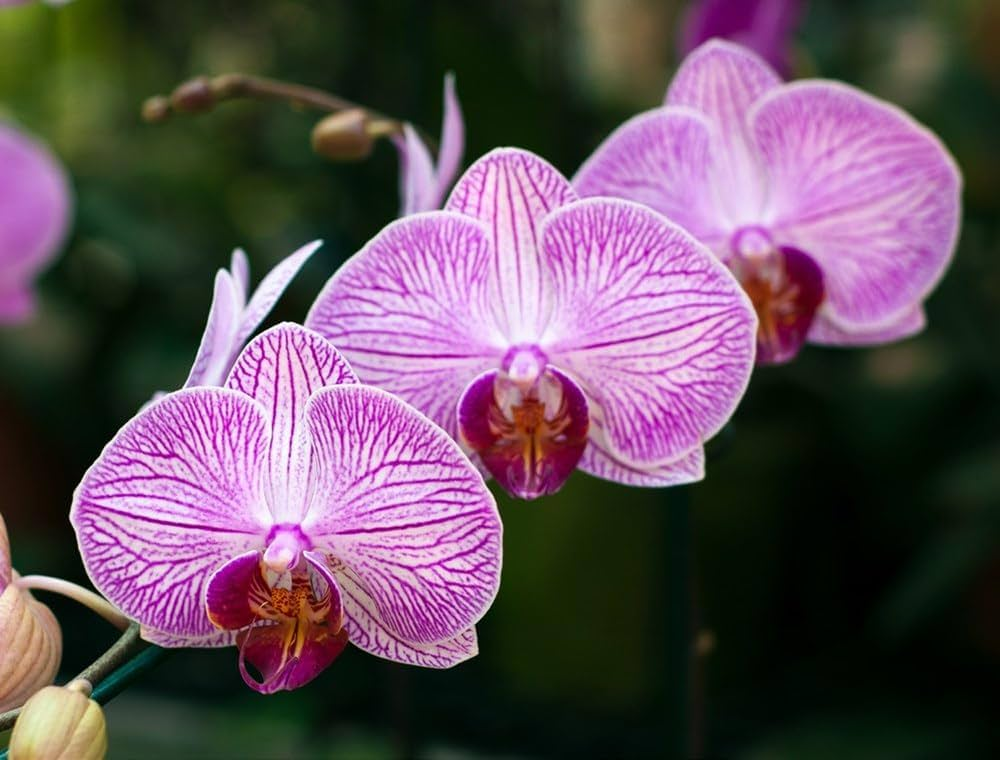

Orchids are one of the largest and most diverse plant families in the world, known for their exquisite beauty,
unique shapes, and vibrant colors. They are often symbols of love, luxury, and refinement.
Plant Attributes & Uses
Scientific Classification
Family: Orchidaceae
Genus: Multiple (e.g., Phalaenopsis, Dendrobium)
Species: 25,000+ known species
Global Spread
Found worldwide, especially abundant in tropical and subtropical regions.
Preferred Climate
Warm, humid environments with good air circulation; tropical to temperate climates.
Medicinal Uses
Some orchids are used in traditional remedies to treat infections and fatigue; Vanilla comes from an orchid species.
Traditional Uses
Used in perfumes, ceremonies, teas, and as ornamental symbols of grace and elegance.
Cosmetic Benefits
Orchid extracts are included in skincare for moisturizing and anti-aging properties.
Garden Information
Hardiness: Varies widely; common types thrive in Zones 6–11
Climate Zones: Tropical, Subtropical, Temperate
Exposure: Bright, indirect light; avoid harsh sun
Soil Type: Loose, well-drained bark or moss-based orchid mix
Water Needs: Moderate; keep moist but not soggy, allow slight drying between waterings